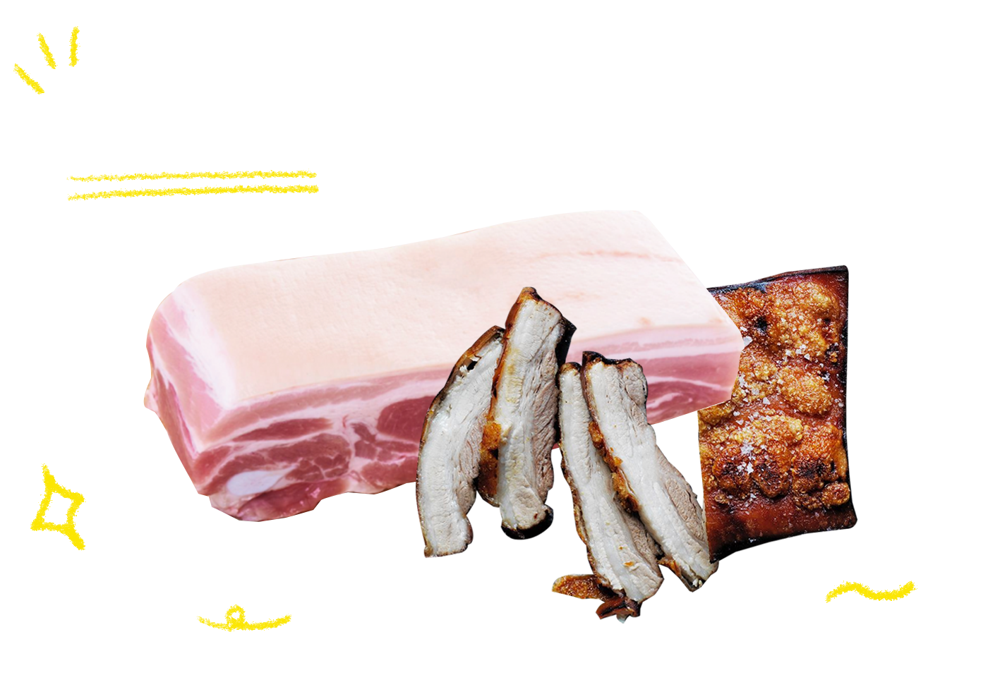
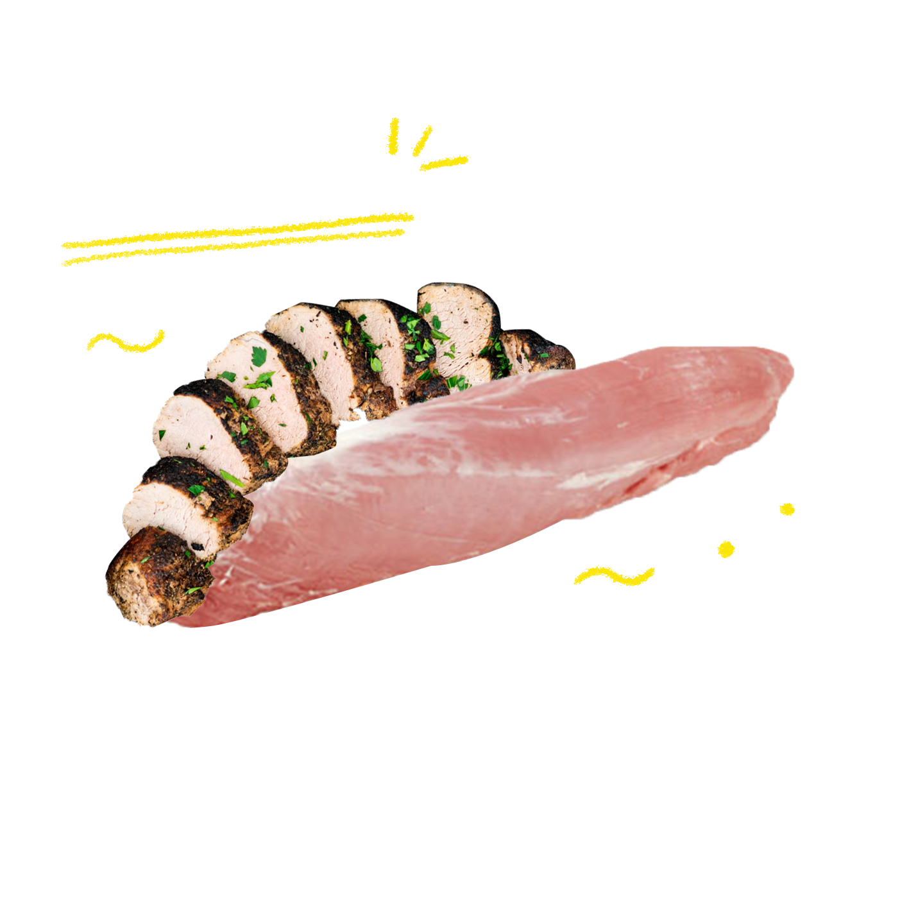
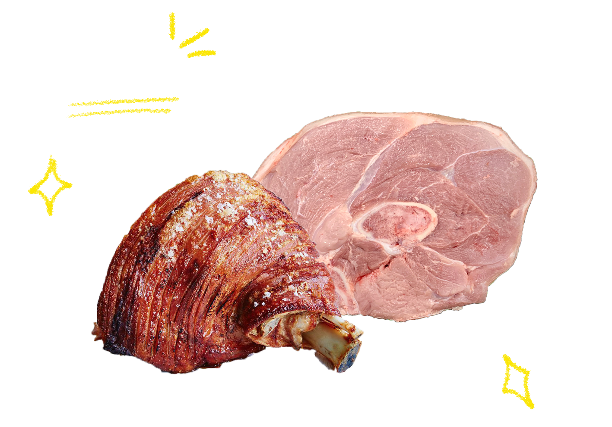
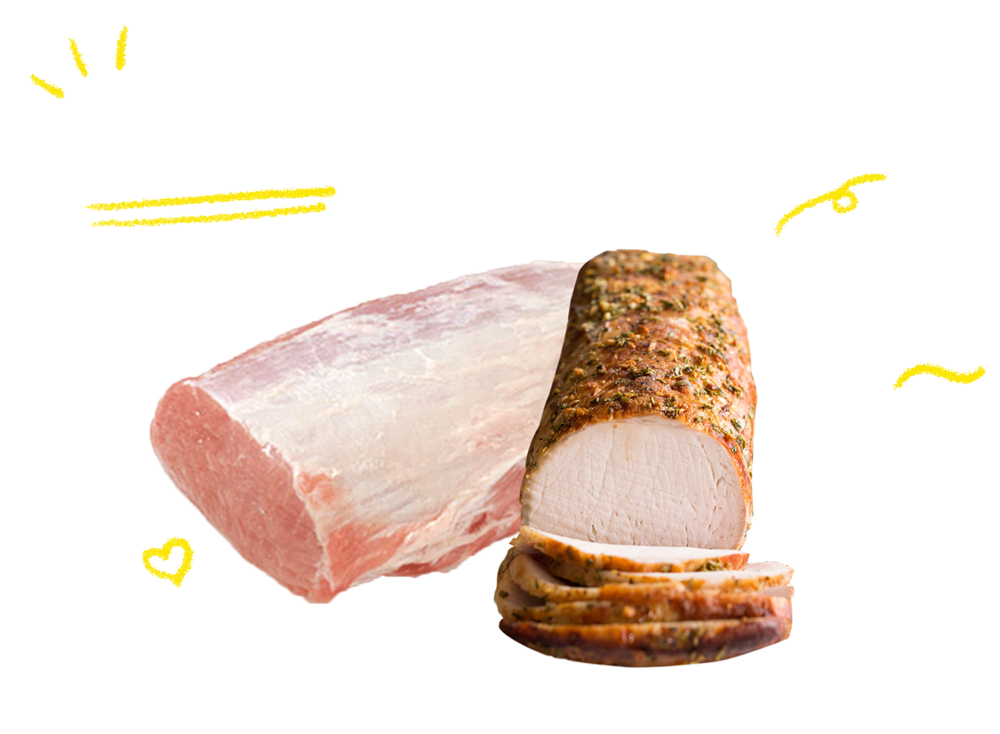

Blage Shoulder
보통 ‘목살’이라 칭하는 부위입니다.
특징: 지방이 적고 풍미가 좋습니다.
용도: 소금 구이, 보쌈, 구이, 폭찹, 스테이크, 불고기, 돈가스로 조리해 먹는다면 최적의 맛을 느낄 수 있습니다.
좋은 목심 고르는 법: 마블링 적당히 있고 힘줄 없는 부위가 최고의 목심입니다.
집에서 즐길 수 있는 최적의 조리법: 목살 주사위 스테이크 구이’
Tip.허브솔트와 후추 그라인더, 로즈마리와 함께라면 당신이 있는 그곳이 바로 레스토랑입니다.
Spare Rib
보통 ‘등갈비’라 칭하는 부위입니다.
특징: 복강 쪽 표면을 두꺼운 근막이 덮고 있어 마블링이 좋고 육즙이 진합니다. 따라서 감칠맛과 골즙 향, 등심근의 담백한 살코기 맛이 조화를 이뤄 최상의 맛을 자랑합니다.
용도: 돼지갈비 혹은 바비큐, 찜, 꼬치 구이로 조리해 먹는다면 최적의 맛을 경험할 수 있습니다.
좋은 등갈비 고르는 법: 등심근의 살코기가 많은 부위가 담백함을 최대로 느낄 수 있는 등갈비입니다.
집에서 즐길 수 있는 최적의 조리법: ‘등갈비 구이’
Tip.조리 전 복강 쪽을 덮고 있는 근막을 제거해 질기지 않게 만드는 것이 포인트!
Belly

보통 ‘삼겹살’이라 칭하는 부위입니다.
특징: 캠핑의 꽃이라고도 할 수 있죠. 삼겹살! 등심 아래 복부 부위로, 근육과 근간지방이 세 개의 층을 이루고 있습니다. 지방 함량이 높아 단백질이 적지만 지방의 고소한 맛과 육단백질의 구수한 맛이 조화로운 게 가장 큰 특징입니다.
용도: 구이, 보쌈, 바비큐
좋은 삼겹살 고르는 법: 육색이 짙고 힘줄, 근막이 적은 부위가 다소 질긴 식감을 줄여줍니다.
집에서 즐길 수 있는 최적의 조리법: 뭐니뭐니 해도 허브솔트와 후추를 곁들인 두꺼운 ‘삼겹살 구이’
Tip.숯불에 구워먹는 것도 맛있지만 에어프라이어에 조리해 먹는다면 육즙 가득한 삼겹살을 맛볼 수 있습니다.
Tenderloin

보통 ‘안심’이라 칭하는 부위입니다.
특징: 안심은 근육을 감싼 지방층이 없는 게 특징입니다. 살코기만으로 이루어져 있습니다! 따라서 고단백질을 자랑하는 부위입니다. 다른 부위들에 비해 육색이 진한 편이고, 근육의 결도 부드러워 질기지 않습니다.
용도: 돈가스, 탕수육, 구이, 찜, 불고기, 꼬치 구이, 장조림
좋은 안심 고르는 법: 힘줄이 없고, 근육의 결이 부드러워보이는 부위
집에서 즐길 수 있는 최적의 조리법: 안심의 부드러움과 육즙을 한 번에 느낄 수 있는 ‘탕수육’과 ‘꼬치 구이’
Tip.육즙이 많고 부드럽기 때문에 두껍게 잘라 조리한다면 육즙을 한가득 느낄 수 있습니다.
Leg

보통 ‘뒷다리’라 칭하는 부위입니다.
특징: 돼지고기 중 가장 운동량이 많은 근육들로 이루어져 있습니다. 따라서 육색도 가장 짙고 식감도 가장 질깁니다. 또한, 근막이 잘 발달돼 있어 고기의 결이 매우 거칩니다. 다시 정리해보자면, 돼지가 가장 근육을 많이 쓰는 부위이기 때문에 가장 질긴 부위입니다.
용도: 장조림, 튀김, 불고기, 찜
좋은 뒷다리살 고르는 법: 선홍빛 색이 도는 뒷다리를 고른다면 가장 최상의 맛을 느낄 수 있습니다.
집에서 즐길 수 있는 최적의 조리법: 식감이 질기기 때문에 겉절이와 함께 곁들인 ‘수육’ 혹은 ‘보쌈’
Tip.뒷다리의 질긴 식감을 부드럽게 만들기 위해 장시간 삶는 것이 최적의 식감을 낼 수 있는 방안입니다.
Arm Shoulder
보통 ‘앞다리’라 칭하는 부위입니다.
특징: 앞다리살과 앞사태살이 있는 부위입니다. 짙은 육색과 진한 육향, 풍부한 육즙으로 식감이 좋아 돼지고기의 단백질 맛을 음미하기에 최적화 되어있습니다.
용도: 수육, 두루치기, 불고기, 찌개
좋은 앞다리살 고르는 법: 육색이 짙고 힘줄, 근막이 적은 부위가 다소 질긴 식감을 줄여줍니다.
집에서 즐길 수 있는 최적의 조리법: ‘육개장’, ‘불고기’, ‘장조림’
Tip.잘 발달된 근막으로 인해 고기가 거칠고 식감이 다소 질기기레 잘게 썰거나 다져서 조리하는 게 좋습니다.
Loin

보통 ‘등심’이라 칭하는 부위입니다.
특징: 표면이 하얀 지방으로 싸여 있고, 육색이 담홍색으로 보이는 부위입니다. 운동량이 적은 근육들로 이루어져 있고 근막도 많지 않아 질기지 않는 것이 특징입니다.
용도: 폭찹, 탕수육, 스테이크, 불고기
좋은 등심 고르는 법: 육색이 담홍색으로 보이며, 적은 근막을 지닌 등심이 조리하기 가장 최적화된 등심입니다.
집에서 즐길 수 있는 최적의 조리법: ‘돈가스’, ‘등심 스테이크’
Tip.근막이 적은 대신 육즙을 잡는 능력이 약해 보관을 잘못하면 퍽퍽해지기 쉽습니다. 육즙 가득 등심을 먹기 위해 주의하세요!